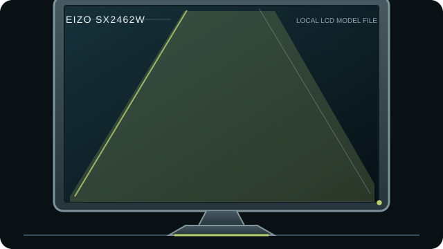

[ INDIVIDUAL COMPONENT // DISPLAYS ]
EIZO FlexScan SX2462W
24.1-inch 16:10 high-resolution graphics LCD with DisplayPort and dual-link digital inputs.

IDENTIFICATION: Match the complete model and regional suffix on the rear label. This record summarizes published specifications; it is not a substitute for the exact unit manual, cable requirements or physical condition check.
Specifications
| Catalog subcategory | LCD displays |
|---|---|
| Exact product / family | EIZO FlexScan SX2462W |
| Panel and native resolution | 24.1-inch IPS LCD, 1920 × 1200 (16:10) |
| Native timing | 1920 × 1200 at up to 60 Hz |
| Inputs / companion ports | DisplayPort and two DVI-I inputs; USB 2.0 hub |
| Revision and model distinction | Use the SX2462W user manual, not SX2262W or later ColorEdge/FlexScan documentation. Regional suffixes and bundles may differ; the manual describes input capabilities and the 10-bit signal path as connection-dependent. It has no HDMI input. |
Host compatibility and connection notes
DisplayPort supports the display’s higher bit-depth input path when paired with a compatible GPU and application; DVI accepts digital video and may accept analog through suitable DVI-I connections. The USB hub requires its upstream connection.
An input’s 10-bit capability is not proof of an end-to-end 10-bit output pipeline; GPU, OS, application and cable all matter. Verify the selected input and supported timing before calibration.
Preservation notes
Record the rear-label model, serial/date code, included stand/accessories, tested input, source timing, image condition and calibration state. Keep the matching manual and cable/adaptor chain with the unit; use qualified service procedures for internal work.
Manufacturer documentation and sources
- EIZO — SX2462W official user manual (PDF)Manufacturer manual covering specifications and supported inputs.
- EIZO — SX2462W product databaseManufacturer model support entry and documentation reference.